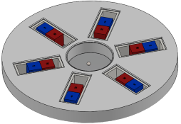
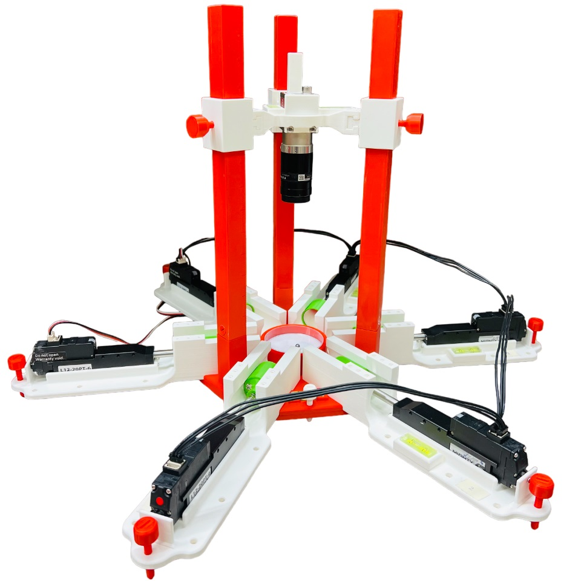
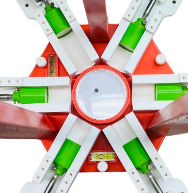

Projects
Noncontact Magnetic Manipulator
The goal of this project is to drive a magnetic bead along arbitrary paths on a 2D plane. It is achieved by changing the distance of six axially magnetized permanent magnets from the circular workspace.

Control algorithms are developed based on a mathematical model of the magnetic manipulator, and they are experimentally validated using a bench-top prototype.


The video below shows the performance of the magnetic manipulator with a simple linear controller.
Behavioral Dynamics: Under Reward Feedback
Living systems are continuously challenged with tasks that must balance immediate needs against potential long-term benefits. The brain integrates social, environmental, and physiological cues in order to make decisions that are adaptive and beneficial for survival. This project explores animal social interactions while making trade-offs between physical and social rewards.
In these tasks, decisions are often influenced by prior outcomes, with animals showing a tendency to favor options that have recently yielded rewards. Beyond this reward-history effect, their behavior is also shaped by preceding choices — a pattern that remains difficult to account for using existing computational frameworks. We focused on developing mathematical models that capture these behavioral patterns.